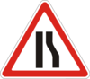
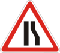

34. Дорожная разметка
Линии горизонтальной разметки имеют белый цвет.
Синий цвет имеет линия 1.1, если ею обозначаются площадки для парковки, отведенные на проезжей части.
Желтый цвет имеют линии 1.4, 1.10.1, 1.10.2, 1.17, а также линия 1.2, если ею обозначаются границы полосы для движения маршрутных транспортных средств.
Красно-белый цвет имеют линии 1.14.3-1.14.5, 1.15. Оранжевый цвет имеют линии временной разметки.
Разметка 1.25-1.28 дублирует изображение знаков.
Горизонтальная разметка имеет следующее значение:
 (узкая сплошная линия) – разделяет транспортные потоки противоположных направлений и обозначает границы полос движения на дорогах;
(узкая сплошная линия) – разделяет транспортные потоки противоположных направлений и обозначает границы полос движения на дорогах;
обозначает границы проезжей части, на которые въезд запрещен;
обозначает границы мест стоянки транспортных средств, площадок для парковки и край проезжей части дорог, не отнесенных по условиям движения к автомагистралям;
 (широкая сплошная линия) – обозначает край проезжей части на автомагистралях или границы полосы для движения маршрутных транспортных средств.
(широкая сплошная линия) – обозначает край проезжей части на автомагистралях или границы полосы для движения маршрутных транспортных средств.
В местах, где на полосу маршрутных транспортных средств разрешен заезд другим транспортным средствам, эта линия может быть прерывистой;
 3.34
и наносится у края проезжей части или по верху бордюра;
3.34
и наносится у края проезжей части или по верху бордюра;
 – разделяет транспортные потоки противоположных направлений на дорогах, имеющих две или три полосы; обозначает– границы полос движения, при наличии двух и более полос, предназначенных для движения в одном направлении;
1.1
или
1.11,
разделяющей транспортные потоки противоположных или попутных направлений;
– разделяет транспортные потоки противоположных направлений на дорогах, имеющих две или три полосы; обозначает– границы полос движения, при наличии двух и более полос, предназначенных для движения в одном направлении;
1.1
или
1.11,
разделяющей транспортные потоки противоположных или попутных направлений;
 – обозначает границы полос движения, на которых осуществляется реверсивное регулирование; разделяет транспортные потоки противоположных направлений (при выключенных реверсивных светофорах) на дорогах, где осуществляется реверсивное регулирование;
– обозначает границы полос движения, на которых осуществляется реверсивное регулирование; разделяет транспортные потоки противоположных направлений (при выключенных реверсивных светофорах) на дорогах, где осуществляется реверсивное регулирование;
 3.35
и наносится у края проезжей части или по верху бордюра;
3.35
и наносится у края проезжей части или по верху бордюра;
 (стоп-линия) – обозначает место, где водитель должен остановиться при наличии знака
(стоп-линия) – обозначает место, где водитель должен остановиться при наличии знака
 2.2
либо при сигнале светофора или регулировщика, запрещающем движение;
2.2
либо при сигнале светофора или регулировщика, запрещающем движение;
 – обозначает место, где водитель должен в случае необходимости остановиться и уступить дорогу транспортным средствам, движущимся по пересекаемой дороге;
– обозначает место, где водитель должен в случае необходимости остановиться и уступить дорогу транспортным средствам, движущимся по пересекаемой дороге;
 – обозначают пешеходный переход, на котором движение регулируется светофором, разметкой
1.14.5
обозначается место перехода слепых пешеходов;
– обозначают пешеходный переход, на котором движение регулируется светофором, разметкой
1.14.5
обозначается место перехода слепых пешеходов;
 – обозначают направляющие островки в местах разделения, разветвления или слияния транспортных потоков;
– обозначают направляющие островки в местах разделения, разветвления или слияния транспортных потоков;
 – обозначает разрешенные на перекрестке направления движения по полосам. Применяется самостоятельно или совместно со знаками
– обозначает разрешенные на перекрестке направления движения по полосам. Применяется самостоятельно или совместно со знаками
 5.16,
5.18;
разметка с изображением тупика наносится для обозначения того, что поворот на ближайшую проезжую часть запрещен; разметка, разрешающая поворот налево с крайней левой полосы, разрешает также разворот;
1.1
или
1.11,
разделяющей транспортные потоки противоположных направлений. В первом случае может применяться в сочетании со знаками

5.16,
5.18;
разметка с изображением тупика наносится для обозначения того, что поворот на ближайшую проезжую часть запрещен; разметка, разрешающая поворот налево с крайней левой полосы, разрешает также разворот;
1.1
или
1.11,
разделяющей транспортные потоки противоположных направлений. В первом случае может применяться в сочетании со знаками

 1.5.1-1.5.3;
2.2;
1.5.1-1.5.3;
2.2;
Линии
1.1
и
1.3
пересекать запрещается. Если линией
1.1
обозначено место стоянки, площадка для парковки или край проезжей части, смежный с обочиной, эту линию пересекать разрешается.
Как исключение, при условии обеспечения безопасности дорожного движения, разрешается пересекать линию
1.1
для объезда неподвижного препятствия, размеры которого не дают возможности осуществить его безопасный объезд, не пересекая эту линию, а также обгона одиночных транспортных средств, движущихся со скоростью
менее 30 км/ч.
Линию
1.2
разрешается пересекать в случае вынужденной остановки, если этой линией обозначен край проезжей части, смежный с обочиной.
Линии
1.5-1.8
пересекать разрешается с любой стороны.
На участке дороги между реверсивными светофорами линию
1.9
разрешается пересекать, если она расположена справа от водителя.
При включенных сигналах зеленого цвета в реверсивных светофорах линию
1.9
разрешается пересекать с любой стороны, если она разделяет полосы, по которым движение разрешено в одном направлении. В случае выключения реверсивных светофоров водитель должен немедленно перестроиться направо за линию разметки
1.9.
Линию
1.9,
находящуюся слева, при выключенных реверсивных светофорах пересекать запрещается.
Линию 1.11 разрешается пересекать только со стороны ее прерывистой части, а со стороны сплошной – только по завершении обгона или объезда препятствия.
Полосы вертикальной разметки имеют черно-белый цвет.
Красно-белый цвет имеют полосы 2.3.
Желтый цвет имеет линия 2.7.
Вертикальная разметка обозначает:
 4.7-4.9,
либо начальные или конечные элементы дорожных ограждений. Нижний край полос разметки обозначает сторону, с которой необходимо объезжать преграду;
4.7-4.9,
либо начальные или конечные элементы дорожных ограждений. Нижний край полос разметки обозначает сторону, с которой необходимо объезжать преграду;